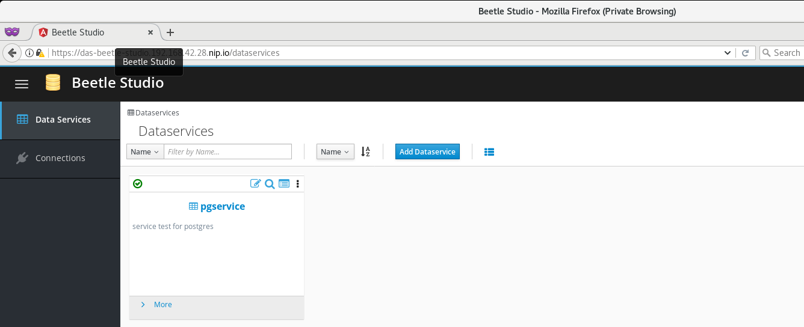
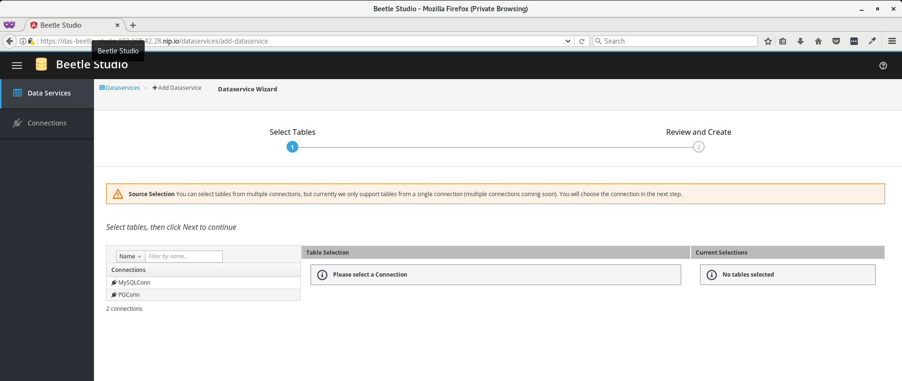

Introducing Teiid in the cloud
Bring open source flexibility and security to your data services in the cloud.
Get Started LearnBuild services via Beetle Studio
Beetle Studio can manage your cloud data services based on proven Teiid technologies.... blah, blah, blah.

Visual data service design tool
Beetle Studio allows literally anyone to connect to data sources, graphically create data services and access them via your critical services and applications.

Your data is only one step away
Beetle Studio lets you connect to, view, combine and secure your data.
Flexible Deployments on OpenShift Origins
Don’t get tied into a single technology or platform. With Beetle Studio, you have choices. Access it in the cloud or on-premise, with OpenShift Origins.